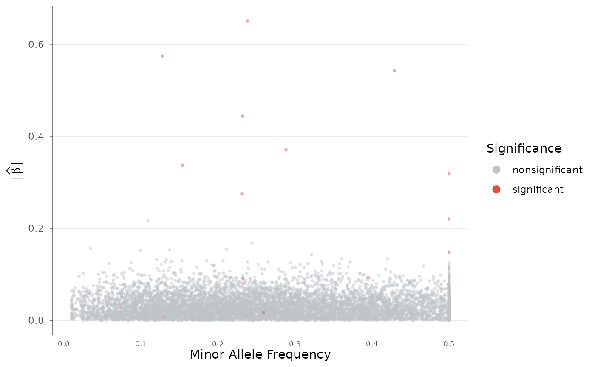

Visualize the relationship between minor allele frequency and effect size, revealing whether a trait's genetic architecture is polygenic (many small effects) or oligogenic (few large effects). Points are colored by significance.
Usage
architecture_plot(
data,
beta = NULL,
p = NULL,
af = NULL,
p_threshold = 5e-08,
colors = c(significant = "#E64B35", nonsignificant = "#BDC3C7"),
point_size = 1,
alpha = 0.5,
log_maf = FALSE,
show_density = FALSE,
label_top_n = NULL,
title = NULL
)Arguments
- data
A
gwas_dataobject or data.frame with P, BETA, and AF columns.- beta, p, af
Column name overrides.
- p_threshold
P-value threshold for coloring significant variants.
- colors
Named vector with "significant" and "nonsignificant" colors.
- point_size
Point size.
- alpha
Transparency.
- log_maf
If TRUE, use log10(MAF) on x-axis.
- show_density
If TRUE, add marginal density curves.
- label_top_n
Label the top N variants by significance.
- title
Plot title.
Examples
data(example_gwas)
architecture_plot(example_gwas)
